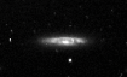
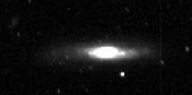

I would like to thank Dr. Patrick Hartigan, Rice University, and McDonald Observatory for making this project possible.
Chapter 4 Colors and Color Gradients of Spiral Galaxies. https://123.physics.ucdavis.edu/file_folder_files/Color%20Gradients%20Spirals.pdf.
Mahabal, Ashish, et al. “Effective Radii and Color Gradients in Radio Galaxies.” THE ASTROPHYSICAL JOURNAL, The American Astronomical Society, 10 May 1999, https://iopscience.iop.org/article/10.1086/311995/fulltext/985363.text.html.
 Some closeups of other galaxies in the Markarian Chain: NGC4388 (left) and NGC4402 (right).